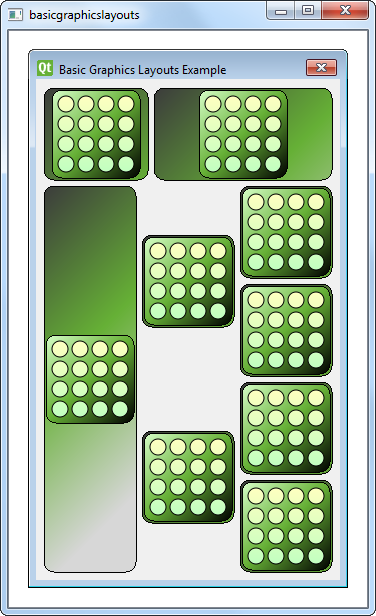

Basic Graphics Layouts Example
The Basic Graphics Layouts example shows how to use the layout classes in QGraphicsView: QGraphicsLinearLayout and QGraphicsGridLayout. In addition to that it shows how to write your own custom layout item.

Window Class Definition
The Window class is a subclass of QGraphicsWidget. It has a constructor with a QGraphicsWidget parent as its parameter.
class Window : public QGraphicsWidget { Q_OBJECT public: Window(QGraphicsWidget *parent = 0); };
Window Class Implementation
The constructor of Window instantiates a QGraphicsLinearLayout object, windowLayout, with vertical orientation. We instantiate another QGraphicsLinearLayout object, linear, whose parent is windowLayout. Next, we create a LayoutItem object, item and add it to linear with the addItem() function. We also provide item with a stretchFactor.
QGraphicsLinearLayout *windowLayout = new QGraphicsLinearLayout(Qt::Vertical);
QGraphicsLinearLayout *linear = new QGraphicsLinearLayout(windowLayout);
LayoutItem *item = new LayoutItem;
linear->addItem(item);
linear->setStretchFactor(item, 1);
We repeat the process:
- create a new
LayoutItem, - add the item
linear, and - provide a stretch factor.
item = new LayoutItem;
linear->addItem(item);
linear->setStretchFactor(item, 3);
windowLayout->addItem(linear);
We then add linear to windowLayout, nesting two QGraphicsLinearLayout objects. Apart from the QGraphicsLinearLayout, we also use a QGraphicsGridLayout object, grid, which is a 4x3 grid with some cells spanning to other rows.
We create seven LayoutItem objects and place them into grid with the addItem() function as shown in the code snippet below:
QGraphicsGridLayout *grid = new QGraphicsGridLayout(windowLayout);
item = new LayoutItem;
grid->addItem(item, 0, 0, 4, 1);
item = new LayoutItem;
item->setMaximumHeight(item->minimumHeight());
grid->addItem(item, 0, 1, 2, 1, Qt::AlignVCenter);
item = new LayoutItem;
item->setMaximumHeight(item->minimumHeight());
grid->addItem(item, 2, 1, 2, 1, Qt::AlignVCenter);
item = new LayoutItem;
grid->addItem(item, 0, 2);
item = new LayoutItem;
grid->addItem(item, 1, 2);
item = new LayoutItem;
grid->addItem(item, 2, 2);
item = new LayoutItem;
grid->addItem(item, 3, 2);
windowLayout->addItem(grid);
The first item we add to grid is placed in the top left cell, spanning four rows. The next two items are placed in the second column, and they span two rows. Each item's maximumHeight() and minimumHeight() are set to be equal so that they do not expand vertically. As a result, these items will not fit vertically in their cells. So, we specify that they should be vertically aligned in the center of the cell using Qt::AlignVCenter.
Finally, grid itself is added to windowLayout. Unlike QGridLayout::addItem(), QGraphicsGridLayout::addItem() requires a row and a column for its argument, specifying which cell the item should be positioned in. Also, if the rowSpan and columnSpan arguments are omitted, they will default to 1.
Note that we do not specify a parent for each LayoutItem that we construct, as all these items will be added to windowLayout. When we add an item to a layout, it will be automatically reparented to the widget on which the layout is installed.
setLayout(windowLayout);
setWindowTitle(tr("Basic Graphics Layouts Example"));
Now that we have set up grid and added it to windowLayout, we install windowLayout onto the window object using QGraphicsWidget::setLayout() and we set the window title.
LayoutItem Class Definition
The LayoutItem class is a subclass of QGraphicsLayoutItem and QGraphicsItem. It has a constructor, a destructor, and some required reimplementations. Since it inherits QGraphicsLayoutItem it must reimplement {QGraphicsLayoutItem::setGeometry()}{setGeometry()} and {QGraphicsLayoutItem::sizeHint()}{sizeHint()}. In addition to that it inherits QGraphicsItem, so it must reimplement {QGraphicsItem::boundingRect()}{boundingRect()} and {QGraphicsItem::paint()}{paint()}.
class LayoutItem : public QGraphicsLayoutItem, public QGraphicsItem { public: LayoutItem(QGraphicsItem *parent = 0); ~LayoutItem(); // Inherited from QGraphicsLayoutItem void setGeometry(const QRectF &geom) override; QSizeF sizeHint(Qt::SizeHint which, const QSizeF &constraint = QSizeF()) const override; // Inherited from QGraphicsItem QRectF boundingRect() const override; void paint(QPainter *painter, const QStyleOptionGraphicsItem *option, QWidget *widget = 0) override; private: QPixmap *m_pix; };
The LayoutItem class also has a private instance of QPixmap, m_pix.
LayoutItem Class Implementation
In LayoutItem's constructor, m_pix is instantiated and the block.png image is loaded into it.
LayoutItem::LayoutItem(QGraphicsItem *parent/* = 0*/) : QGraphicsLayoutItem(), QGraphicsItem(parent) { m_pix = new QPixmap(QLatin1String(":/images/block.png")); setGraphicsItem(this); }
We use the Q_UNUSED() macro to prevent the compiler from generating warnings regarding unused parameters.
void LayoutItem::paint(QPainter *painter, const QStyleOptionGraphicsItem *option, QWidget *widget /*= 0*/) { Q_UNUSED(widget); Q_UNUSED(option); QRectF frame(QPointF(0,0), geometry().size()); qreal w = m_pix->width(); qreal h = m_pix->height(); QGradientStops stops;
The idea behind the paint() function is to paint the background rect then paint a rect around the pixmap.
// paint a background rect (with gradient)
QLinearGradient gradient(frame.topLeft(), frame.topLeft() + QPointF(200,200));
stops << QGradientStop(0.0, QColor(60, 60, 60));
stops << QGradientStop(frame.height() / 2 / frame.height(), QColor(102, 176, 54));
//stops << QGradientStop(((frame.height() + h)/2 )/frame.height(), QColor(157, 195, 55));
stops << QGradientStop(1.0, QColor(215, 215, 215));
gradient.setStops(stops);
painter->setBrush(QBrush(gradient));
painter->drawRoundedRect(frame, 10.0, 10.0);
// paint a rect around the pixmap (with gradient)
QPointF pixpos = frame.center() - (QPointF(w, h) / 2);
QRectF innerFrame(pixpos, QSizeF(w, h));
innerFrame.adjust(-4, -4, 4, 4);
gradient.setStart(innerFrame.topLeft());
gradient.setFinalStop(innerFrame.bottomRight());
stops.clear();
stops << QGradientStop(0.0, QColor(215, 255, 200));
stops << QGradientStop(0.5, QColor(102, 176, 54));
stops << QGradientStop(1.0, QColor(0, 0, 0));
gradient.setStops(stops);
painter->setBrush(QBrush(gradient));
painter->drawRoundedRect(innerFrame, 10.0, 10.0);
painter->drawPixmap(pixpos, *m_pix);
}
The reimplementation of boundingRect() will set the top left corner at (0,0), and the size of it will be the size of the layout items geometry(). This is the area that we paint within.
QRectF LayoutItem::boundingRect() const { return QRectF(QPointF(0,0), geometry().size()); }
The reimplementation of setGeometry() simply calls its baseclass implementation. However, since this will change the boundingRect we must also call prepareGeometryChange(). Finally, we move the item according to geom.topLeft().
void LayoutItem::setGeometry(const QRectF &geom) { prepareGeometryChange(); QGraphicsLayoutItem::setGeometry(geom); setPos(geom.topLeft()); }
Since we don't want the size of the item to be smaller than the pixmap, we must make sure that we return a size hint that is larger than m_pix. We also add some extra space around for borders that we will paint later. Alternatively, you could scale the pixmap to prevent the item from becoming smaller than the pixmap. The preferred size is the same as the minimum size hint, while we set maximum to be a large value
QSizeF LayoutItem::sizeHint(Qt::SizeHint which, const QSizeF &constraint) const { switch (which) { case Qt::MinimumSize: case Qt::PreferredSize: // Do not allow a size smaller than the pixmap with two frames around it. return m_pix->size() + QSize(12, 12); case Qt::MaximumSize: return QSizeF(1000,1000); default: break; } return constraint; }
Files:
- graphicsview/basicgraphicslayouts/layoutitem.cpp
- graphicsview/basicgraphicslayouts/layoutitem.h
- graphicsview/basicgraphicslayouts/window.cpp
- graphicsview/basicgraphicslayouts/window.h
- graphicsview/basicgraphicslayouts/main.cpp
- graphicsview/basicgraphicslayouts/basicgraphicslayouts.pro
- graphicsview/basicgraphicslayouts/basicgraphicslayouts.qrc
Images:
{kind=link}